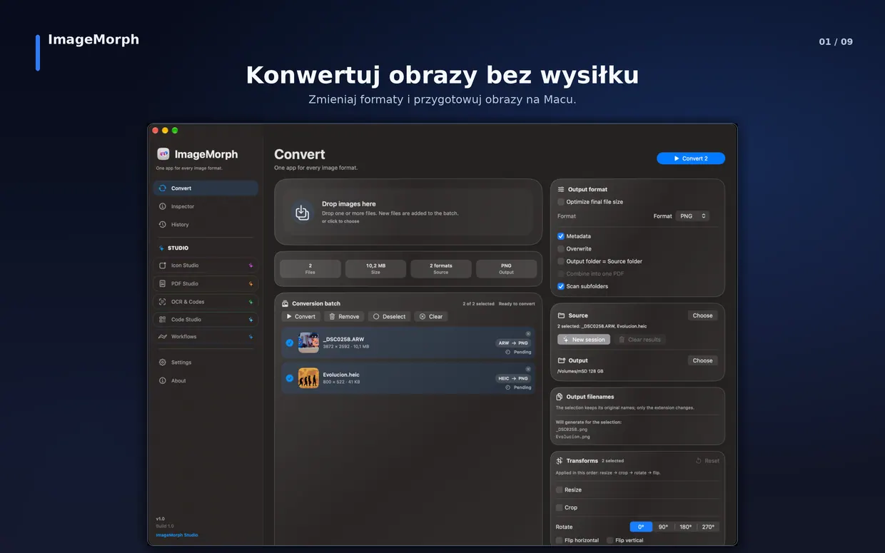
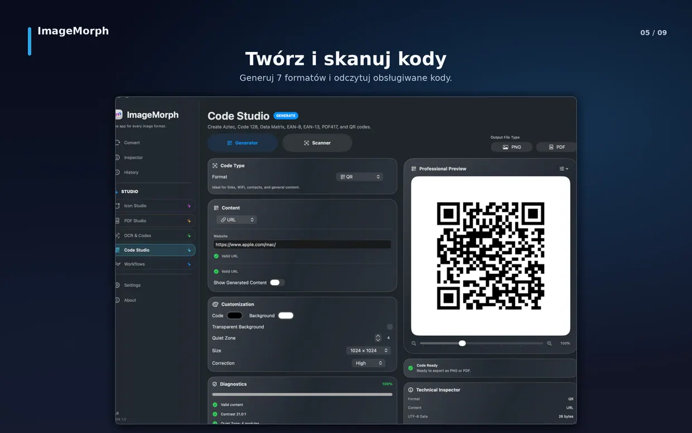
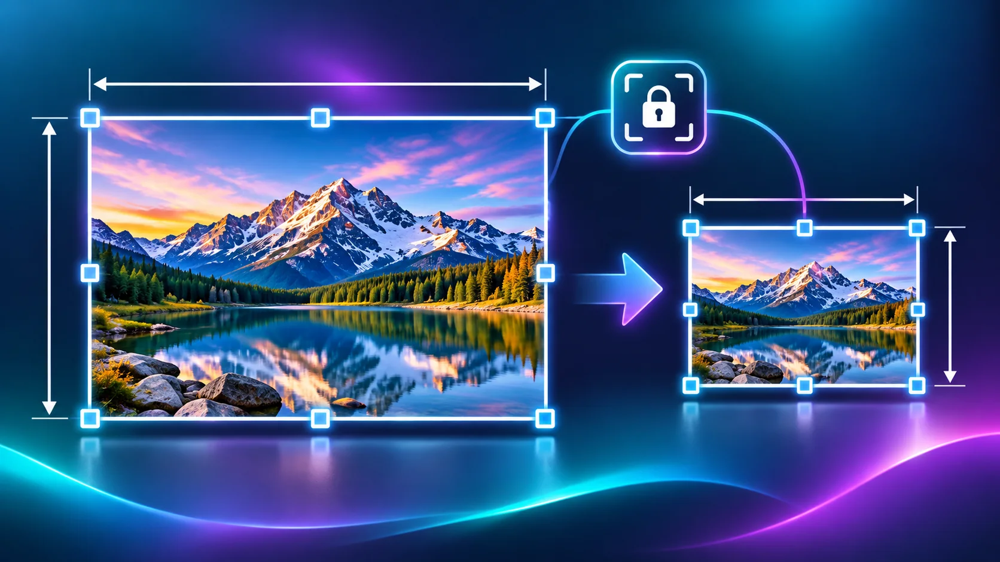
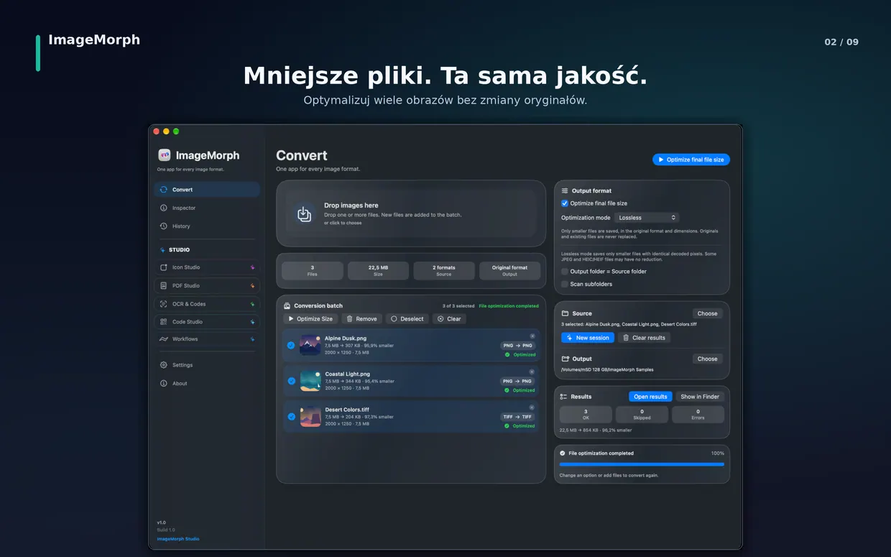
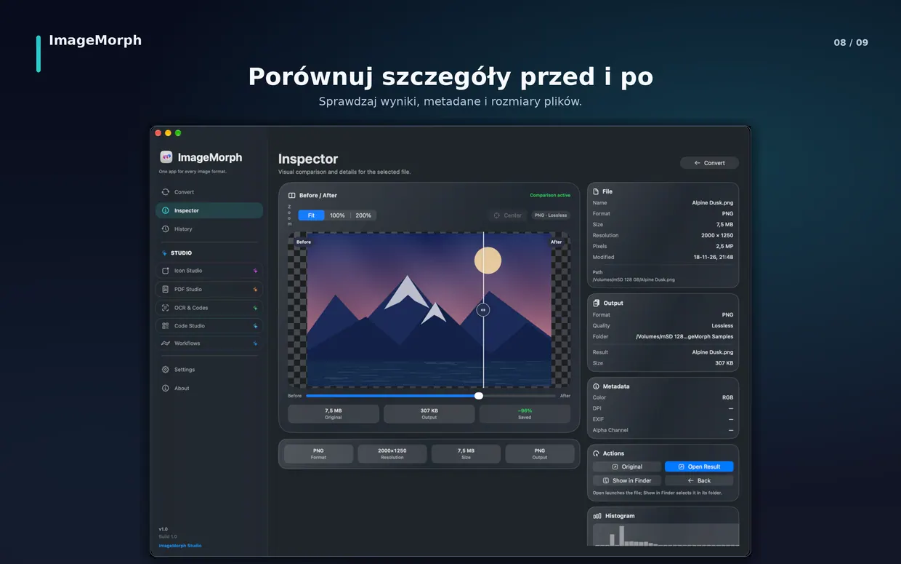
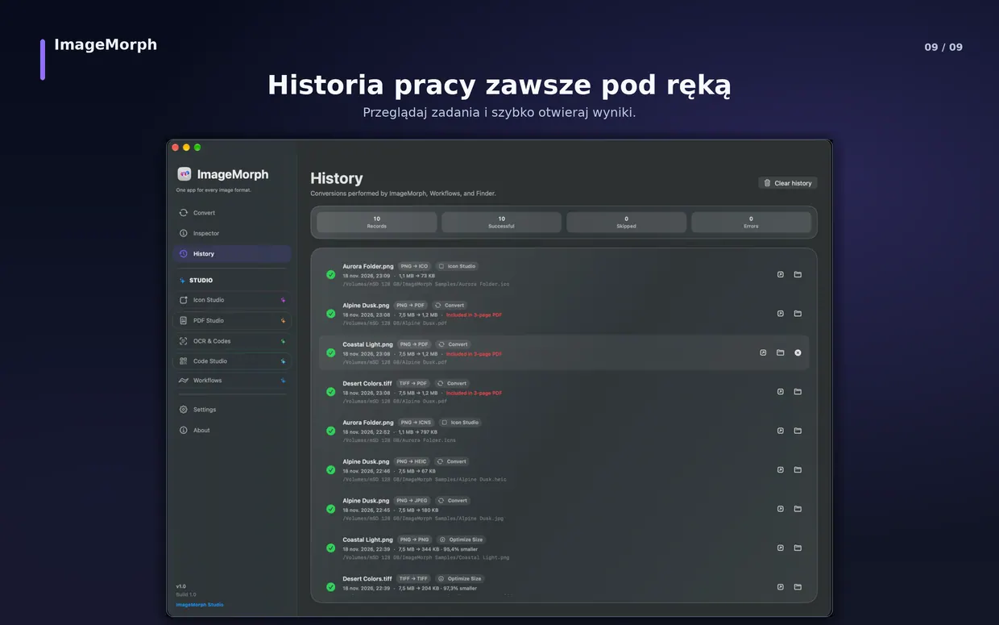
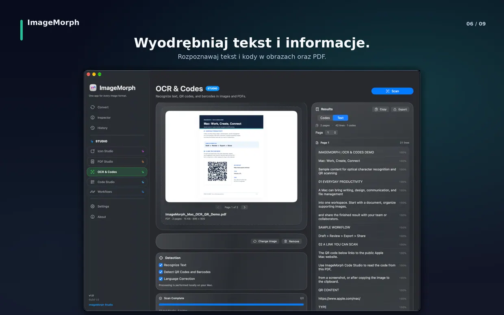
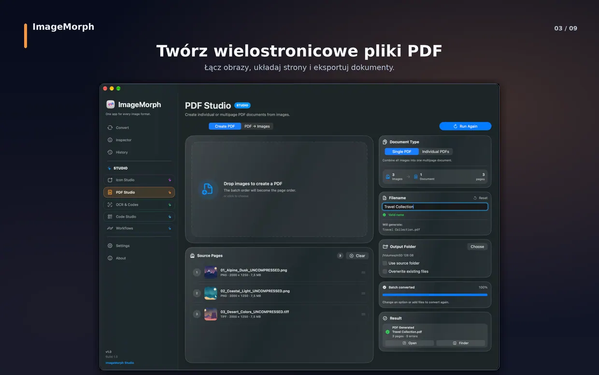
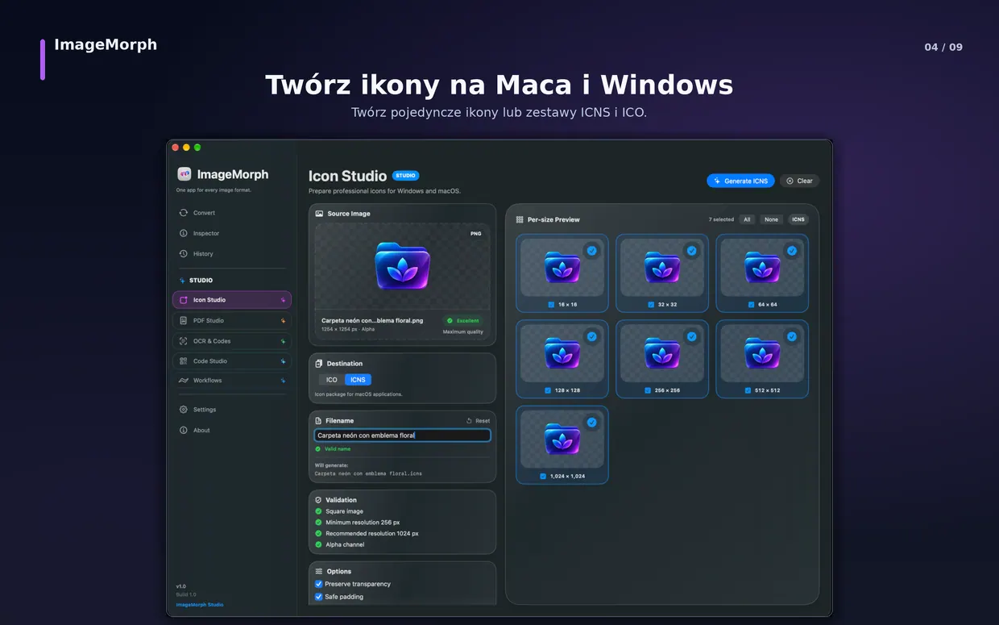
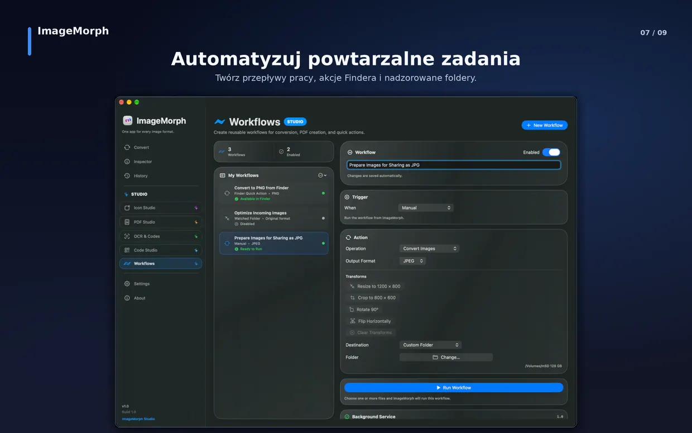

JPEG · PNG · HEIC · TIFF
JPEG, PNG, HEIC i TIFF pojedynczo lub wsadowo.

Konwertuj, zmieniaj rozmiar i optymalizuj obrazy. Twórz PDF i automatyzuj powtarzalne zadania na Macu.
Przygotowanie do premiery w Mac App Store.

Konwertuj, zmieniaj rozmiar i optymalizuj obrazy. Twórz PDF i automatyzuj powtarzalne zadania na Macu.

Rozpoznawaj tekst w obrazach i wielostronicowych PDF, sprawdzaj i eksportuj wyniki.
Odczytaj kod QR z wiadomości e-mail lub PDF na Macu i sprawdź adres docelowy przed otwarciem.


Podgląd URL nie gwarantuje bezpieczeństwa witryny. Sprawdź domenę i nie podawaj danych na nieoczekiwanych stronach.
Zobacz narzędzia kodówJPEG, PNG, HEIC i TIFF pojedynczo lub wsadowo.

Zmieniaj wymiary i proporcje obrazów do różnych zastosowań, zachowując proporcje, gdy jest to potrzebne.

Obsługiwana optymalizacja bezstratna lub stratna; wynik tylko jeśli mniejszy.

Sprawdź format, wymiary i metadane. Po konwersji porównaj wynik z oryginałem.

Przeglądaj operacje i otwieraj pliki wynikowe lub pokaż je w Finderze, jeśli nadal istnieją.

Studio łączy OCR, odczyt kodów, narzędzia PDF, ikony i automatyzację. Jednorazowy zakup bez subskrypcji.
Studio to opcjonalny, trwały zakup w aplikacji.

Rozpoznawaj tekst w obrazach i wielostronicowych PDF, sprawdzaj i eksportuj wyniki.


Odczytuj kody ze schowka, obrazów, PDF-ów i folderów lub skanuj je zgodnym aparatem i skanerem. Sprawdź zawartość i linki przed otwarciem.


Twórz wielostronicowe PDF, eksportuj strony jako obrazy i ustawiaj obrót.

Twórz pliki ICO i ICNS oraz sprawdzaj rozmiary przed eksportem.


Twórz QR, Code128, Data Matrix, EAN, PDF417 i Aztec w PNG lub PDF.

Zapisuj przepływy pracy, monitoruj foldery i uruchamiaj akcje Findera.

| Funkcja | Free | Studio |
|---|---|---|
| Konwersja, rozmiar, optymalizacja | Zawarte | Zawarte |
| Kolejka, Inspector, porównanie, histogram | Zawarte | Zawarte |
| Podstawowe tworzenie PDF | Zawarte | Zawarte |
| PDF Studio i eksport stron | — | Zawarte |
| OCR i rozpoznawanie kodów | — | Zawarte |
| Generowanie kodów i aparat/skaner | — | Zawarte |
| Zestawy ICO i ICNS | — | Zawarte |
| Przepływy, obserwowane foldery, szybkie akcje Finder | — | Zawarte |
Lokalna cena, dostęp Studio i kwalifikacja do próby są widoczne w aplikacji. Zakupy i przywracanie obsługuje Apple.
Konwersja, optymalizacja obrazów, tworzenie PDF i OCR odbywają się na Macu. Treść plików nie trafia do usługi próbnej Studio. Dostęp do plików, folderów, kamer i skanerów wymaga uprawnień; ustawienia, historia, zakładki oraz logi z nazwami, ścieżkami i błędami mogą pozostać lokalnie.
Przeczytaj politykę prywatności